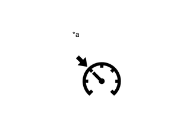

DESCRIPTION
The hybrid vehicle control ECU controls the cruise control system of the vehicle. The data and DTCs relating to the cruise control system can be read from the DLC3 of the vehicle. Use the GTS to check and solve the problem.
Tech Tips
If a vehicle speed sensor, stop light switch assembly or any other related part malfunctions, the hybrid vehicle control ECU cancels control of vehicle speed automatically.
Check the auxiliary battery voltage with the power switch off.
If the voltage is below 11 V, replace or recharge the auxiliary battery before proceeding to the next step.
Check the DLC3.
CHECK INDICATOR
Turn the power switch on (IG).

| *a | Cruise Control Indicator |
Check that the cruise control indicator illuminates when the cruise control system is turned on using the cruise control main switch (ON-OFF button), and that the indicator turns off when the cruise control system is turned off using the cruise control main switch (ON-OFF button).
If the result is not as specified, perform the Cruise Main Indicator Light Circuit (cruise control indicator) inspection procedure.
Tech Tips
While driving with the cruise control system controlling vehicle speed, the hybrid vehicle control ECU will automatically cancel control of vehicle speed by the cruise control system when a malfunction occurs in one of the following: stop light switch assembly, or other related parts. When control of vehicle speed by the cruise control system is automatically canceled, the cruise control indicator turns off and a warning message is displayed. At the same time, a DTC is stored.